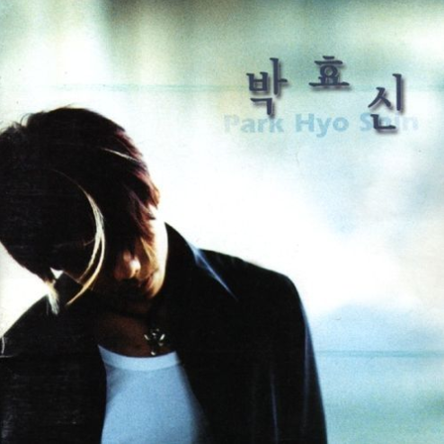
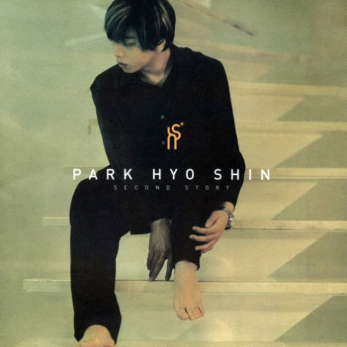
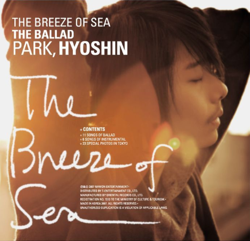
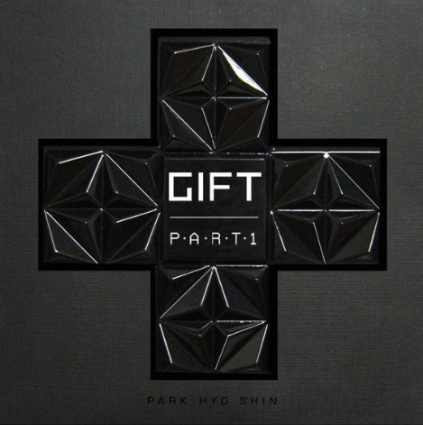
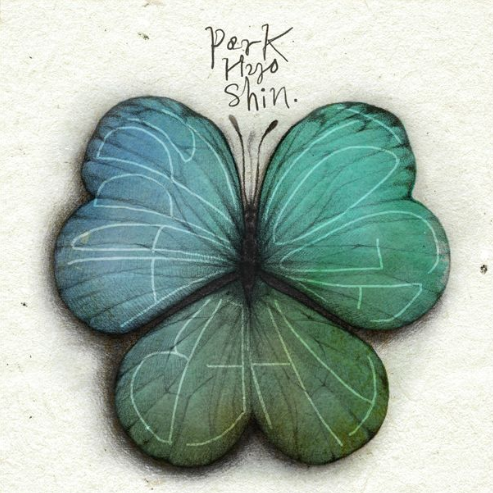
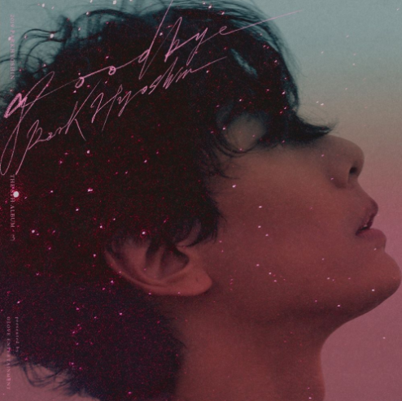

차이를 아시겠나요?
박효신의 창법은 1999년 데뷔 이후 크게 6번의 변화가 나타났습니다.
창법이 변화할 때 이전 창법이 완전히 사라지는 것이 아니고 창법의 범위가
넓어지는 것이기 때문에 결과적으로 그는 여러가지 소리 중에서
각 노래에 어울리는 목소리를 낼 수 있게 되었습니다.
데뷔 21년 차 가수 박효신
그의 창법이 아직도 ‘소몰이’라고 생각하는 분들이 있습니다.
하지만 소몰이는 무려 20년 전 창법이라는 사실,
알고 계셨나요?
박효신의 창법에 관한 오해들
아직도! 소몰이다?
갑자기! 변했다?
이렇게 잘 모르시는 분들을 위해
자세히 알려드릴게요.
21년 차 가수 박효신의 창법 변화!
함께 알아볼까요?
박효신은 데뷔 초 인터뷰에서 흑인 음악, 흑인 R&B를 좋아한다고 밝혔으며
당시 라이브 영상을 통해 실제로 흑인 음악으로부터 많은 영향을 받은 창법을
들어볼 수 있습니다.
<1999년 창법>
1. 다양한 기교를 구사하며 즉흥적인 애드리브가 많은 편
2. 고음에서도 얇고 가벼운 소리가 아닌 굵고 묵직한 소리를 유지
3. 소리가 정돈된 느낌보다는 있는 그대로의 감정을 다양한 기교를 통해
뱉어내는 듯한 날것의 느낌이 강함
4. 본격적인 소몰이 창법이 나타나기 전으로 소몰이보다는 흑인 R&B의
소울풀한 창법이 가장 큰 특징
1999년 창법을 들을 수 있는 노래는 ‘바보, 피아니스트, 피터팬’이 있습니다.

1999. 1집 바보
1999. 1집 피아니스트
1999. 1집 피터팬
<2002년 창법>
1. 소몰이 창법이 가장 잘 드러나는 시기(소몰이 창법의 정점)
2. 1999년 창법의 거친 느낌은 약해지고 부드러운 소리가 강해짐
3. 목소리를 있는 그대로 내뱉지 않고 후두를 낮게 위치시켜 목(공간)을 많이
열어 부드럽게 접촉시키면서 소리를 냄. 그 결과 부드러우면서도 깊고
묵직한 소리가 나며 안정적인 것이 특징
2002년 창법을 들을 수 있는 노래는 ‘동경, 사랑보다 깊은 상처,
It’s Gonna Be Rolling’이 있습니다.

2001. 2집 동경
2002. 3집 사랑보다 깊은 상처
2002. 3집 It’s Gonna Be Rolling
<2007년 창법>
1. 소몰이 창법을 벗어나기 시작하는 시기
2. 이전의 깊고 무거운 부드러움에서 가벼운 부드러움으로 변화
3. 이전보다는 얇고 가벼워졌으며 깔끔해진 소리가 특징
4. 하지만 특유의 묵직하고 깊은 느낌은 조금 남아있는 상태
2007년 창법을 들을 수 있는 노래는 ‘눈의 꽃, Lost, 그립고...그리운...’이 있습니다.

2004. 미안하다 사랑한다 OST 눈의꽃
2007. 5집 Lost
2007. 5집 그립고... 그리운...
<2010년 창법>
1. 소몰이 창법을 완전히 벗어난 시기(창법에 큰 변화가 일어남)
2. 후두를 낮게 위치시켜 깊고 묵직한 소리를 냈던 과거와 달리 후두의 위치를
살짝 올리고 좁은 공간을 통해 소리를 냄
3. 이전과는 확연히 차이나는 좁은 소리가 가장 큰 특징
4. 전체적으로 굉장히 얇고 가벼워졌으며 특히 고음, 가성부분에서 잘 드러남
2010년 창법을 들을 수 있는 노래는 ‘Gift, 사랑한 후에,
눈물날려 그래’가 있습니다.

2009. 6집 Part1 Gift
2009. 6집 Part1 사랑한 후에
2010. 6집 Part2 눈물날려 그래
<2014년 창법>
1. 급격한 변화로 굉장히 좁은 소리를 냈던 2010년 창법보다는
조금 더 넓은 공간을 통해 소리를 내뱉어 굵고 단단한 소리가 특징
2. 목소리가 전체적으로 굉장히 단단하고 선명함
3. 특히 고음 부분에서 높이 올라가면서도 굉장히 단단하고
안정적인 소리가 특징
4. 허스키한 목소리지만 과거 소몰이 창법에서 느껴졌던 막힌듯한 느낌은
완전히 사라지고 소리(가사)를 보다 ‘편하게 내뱉는’ 느낌
2014년 창법을 들을 수 있는 노래는 ‘It’s You, HAPPY TOGETHER,
겨울 고백’이 있습니다.

2013. 미래의 선택 OST It’s You
2014. 디지털 싱글 HAPPY TOGETHER
2013. 디지털 싱글 겨울 고백
<2016년 창법>
1. 주로 웅장하고 묵직한 느낌이 강했던 과거와 달리 전체적으로
얇고 가벼워진 소리가 특징
2. 특유의 발음이 잘 드러남. 모음을 발음할 때 선명하게 딱딱 끊어지는
느낌이 아니라 미세하게 흘리듯이 발음하여 결과적으로 자연스럽게
소리들이 이어지고 부드러운 소리가 특징
3. 한 번의 호흡으로 굉장히 오래 소리를 내뱉음
4. 가성이 굉장히 맑고 섬세함
5. 전체적으로 굉장히 부드럽고 편안한 소리가 특징
6. 이전의 창법이 완전히 사라지는 것이 아니고 표현할 수 있는 창법의
범위가 넓어지는 것이기 때문에 고음, 애드리브 부분에서는 허스키한
목소리가 들리기도 함
7. 진성과 가성의 경계가 느껴지지 않을 정도로
소리의 변화가
자연스럽고 매끄러움
2016년 창법을 들을 수 있는 노래는 ‘Wonderland, Goodbye,
戀人 (연인)’이 있습니다.

2016. 7집 Wonderland
2019. 디지털 싱글 Goodbye
2019. 디지털 싱글 戀人 (연인)
차이를 아시겠나요?
박효신의 창법은 1999년 데뷔 이후 크게 6번의 변화가 나타났습니다.
창법이 변화할 때 이전 창법이 완전히 사라지는 것이 아니고 창법의 범위가
넓어지는 것이기 때문에 결과적으로 그는 여러가지 소리 중에서
각 노래에 어울리는 목소리를 낼 수 있게 되었습니다.
그렇다면!
이제 퀴즈를 풀어볼까요?
다른 시기에 부른 같은 노래를 듣고
어느 시기의 창법인지 골라보세요!
(정답은 아래에서 확인)
난이도 하
노래
It’s Gonna Be Rolling
A
B
2002
2007
2016
난이도 중
노래
그립고... 그리운...
A
B
2007
2014
2016
난이도 상
노래
좋은 사람
A
B
2007
2010
2014
정답 공개
노래
It’s Gonna Be Rolling
A
2002
B
2016
노래
그립고... 그리운...
A
2014
B
2016
노래
좋은 사람
A
2010
B
2014
박효신의 창법이 바뀌는 이유?
데뷔 이후부터 지금까지 박효신의 창법에는 많은 변화가 있었지만 일부러
창법을 바꾼 것은 아니었다. 본인의 창법을 스스로도 확립하지 못하고
프로듀서의 의견을 따랐던 데뷔 초부터 박효신은 ‘노래’에 대해
끊임없이 생각하고 고민해왔다. 결국 ‘무엇을 위한’ 노래를
하기보다는 ‘노래 그 자체’에 집중하기 시작한 그는
‘노래와 어울리는 목소리’를 내기 시작했다.
곡에 대한 깊은 이해에서 나오는 창법
들은 각 노래와 아름다운 조화를
이뤘고 자연스럽게 그의 창법은
조금씩 변화하며 점점 자신
만의 스타일을 확립했다.
창법 변화에 대한
박효신의 생각은?
(2분 32초부터)